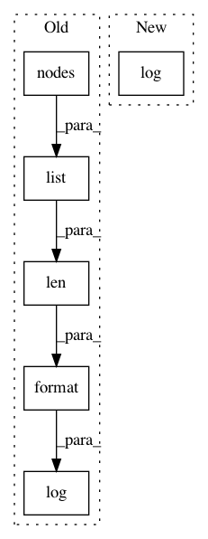

94f657755d8d1047fd9329ea3e69c488fe8096c4,osmnx/save_load.py,,load_graphml,#Any#Any#Any#,484
Before Change
if "edge_default" in G.graph:
del G.graph["edge_default"]
utils.log("Loaded graph with {:,} nodes and {:,} edges from "{}"".format(len(list(G.nodes())),
len(list(G.edges())),
path))
return G
After Change
if "edge_default" in G.graph:
del G.graph["edge_default"]
utils.log(f"Loaded graph with {len(G)} nodes and {len(G.edges())} edges from "{path}"")
return G
In pattern: SUPERPATTERN
Frequency: 3
Non-data size: 6
Instances
Project Name: gboeing/osmnx
Commit Name: 94f657755d8d1047fd9329ea3e69c488fe8096c4
Time: 2020-05-14
Author: boeing@usc.edu
File Name: osmnx/save_load.py
Class Name:
Method Name: load_graphml
Project Name: gboeing/osmnx
Commit Name: a3494227999af2e0242a5bc4f3d76431e5070130
Time: 2020-05-14
Author: boeing@usc.edu
File Name: osmnx/utils_graph.py
Class Name:
Method Name: get_largest_component
Project Name: gboeing/osmnx
Commit Name: a3494227999af2e0242a5bc4f3d76431e5070130
Time: 2020-05-14
Author: boeing@usc.edu
File Name: osmnx/simplification.py
Class Name:
Method Name: simplify_graph